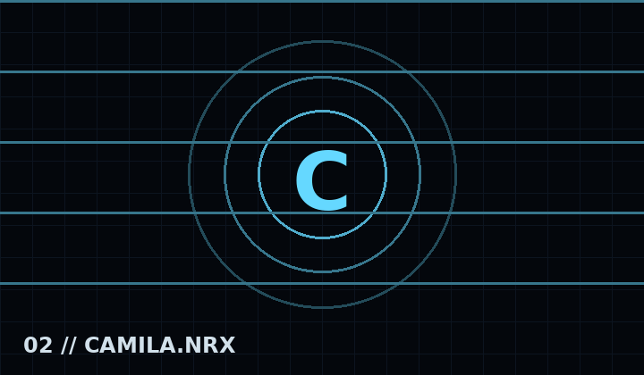

Personaje central de la Temporada 2, ligada a una atmósfera oceánica, inmensa y desconocida.
Dangeragua // señal oceánica
Camila
La imagen de Camila ahora permanece como fondo a lo largo de toda su página. Aunque bajes a canciones, mecánicas, galería y el resto del archivo, Camila sigue detrás del contenido como una presencia constante.

Entidad abisal
Historia
Camila representa la segunda gran etapa de NRX. Su archivo está asociado con R’lyeh y Leviatán, expandiendo el proyecto hacia una realidad abisal donde la escala, el misterio y la presión cambian la forma de interpretar cada enfrentamiento.
“Bajo la superficie, la realidad también observa.”
Canciones
R’lyeh
Leviatán
Reproductor preparado para audio oficial aprobado.
Mecánicas y presentación
Ambientación abisal
Cambios de escala
Secuencias narrativas
Galería
Señal animada del expedienteEspacio para sprite oficialEspacio para arte conceptual
Explora The Depths, City Goddess y Deleted Files en video, además de diseños, sprites, shaders y fragmentos instrumentales eliminados de la demo exclusiva.